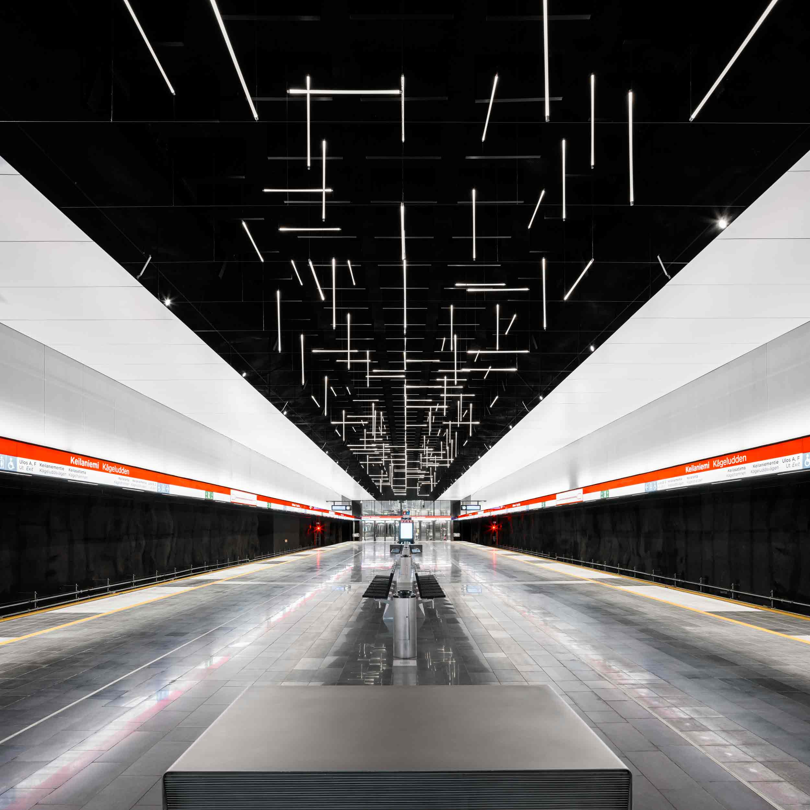
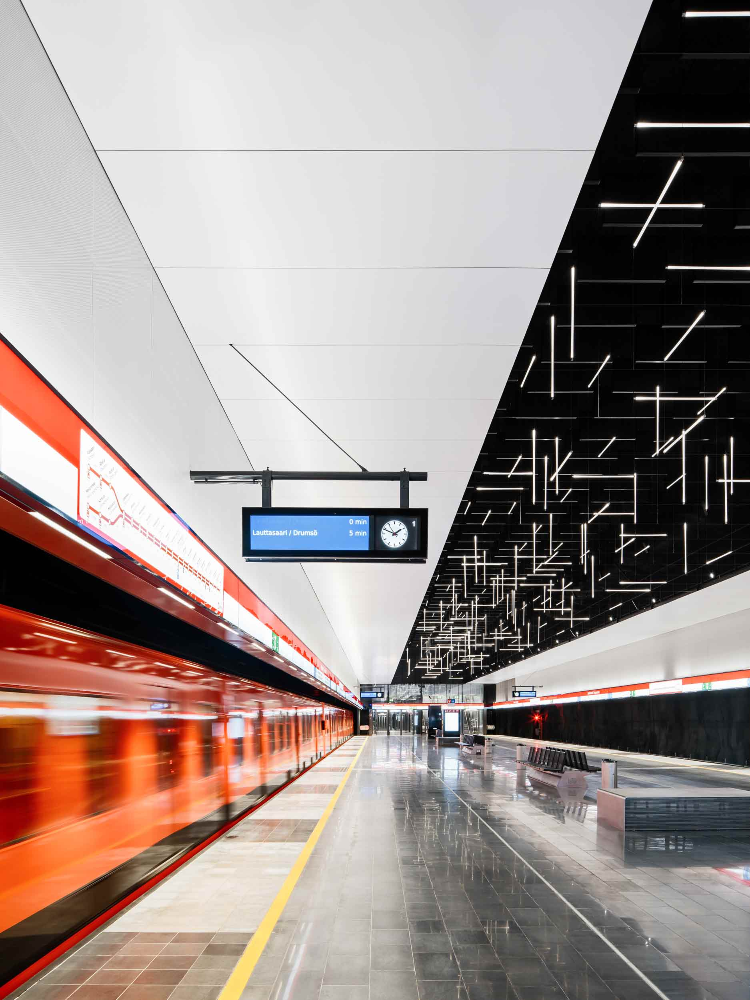
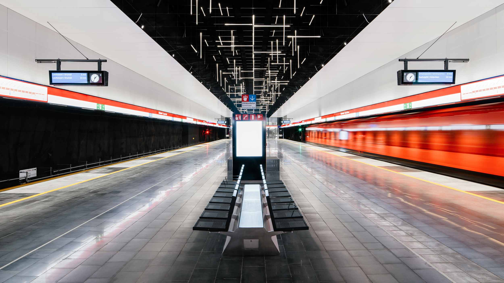

Light Weave
Keilaniemi Metro Station, Espoo
2016
Custom-made led tube lights, stainless-steel wire, fittings, fixtures, electric cord, power sources
72 x 4.8 x 2.4 metres
A total of 280 LED tube lights hang from ceiling of a cavern above a platform area of a metro station. The
stretched three-dimensional structure is made of equal tube lights arranged at three different angles in long
x,y,z grid, connected by thin stainless-steel wires. The ceiling high above the work is painted pitch-black,
so the composition formed by the bright tube lights seems to levitate under dark void. The travelers, looking
at the work while walking underneath or seated in a passing train, experience it as a stream of constantly
changing kinetic patterns.
This commission work is based on a proposal made for Länsimetro Ltd in 2012 on request of art consultant
Jaakko Niemelä. It was realized in close collaboration with ALA Architects Ltd, responsible for architectural
design of the station.



Photos: Tuomas Uusheimo